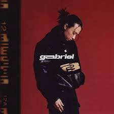
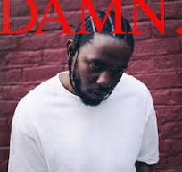

Review
| ALBUM | Synopsis | REVIEW |
|---|---|---|
|  | Gabriel (stylized in uppercase) is the debut studio album by American singer-songwriter Keshi. It was released on March 25, 2022, through Island Records. It was preceded by the singles "Somebody", "Touch" and "Get It". The album was recorded between January and November 2021. | "I am confident that I would've loved GABRIEL a lot more a few years ago but I don't really dig this style that much anymore. keshi's debut album has an overarching youthful aesthetic and depends greatly on good hooks which fortunately, there are many. Although there's a subtle and interesting crossover between alternative R&B and indie pop, the lofi production is not particularly exciting or unique." by Anonymous user |
|
It was released on November 12, 2021, by Big Machine Records. The album's title refers to the tumultuous, "red" emotions Swift experienced during the album's conception; its songs discuss the complex and conflicting feelings resulting from fading romance. | "I recently listened to Taylor Swift's fourth studio album, 'Red,' and I must say, I was blown away. This album is a perfect blend of heartfelt ballads, catchy pop tunes, and honest lyrics that encapsulate the rollercoaster of emotions that come with love and heartbreak." by Anonymous user |
|  | At its core, DAMN. centers around struggle between good and evil. The album begins (or ends, for all you TDE enthusiasts) with the thought-provoking “BLOOD.” Lasting a little under two minutes, the song tells the story of a man who helps a blind woman find something that was lost. | "This is a perfect album. Everything about it works so well. The instrumentals and the beats alone are so distinctly unique and fresh compared to almost any other rap album for the time of its release. The theming of this record is perfect, with Kendrick bringing a lot of issues in ways I haven't heard before or since. Lyrically, this entire album is wonderful. So many verses speak to me on here and they show how poetic rap can really be." by Anonymous user |